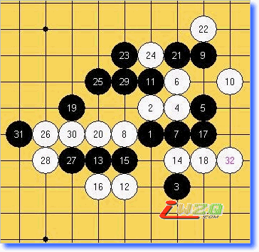
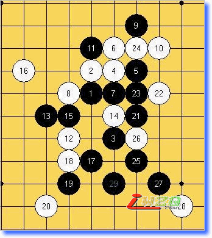
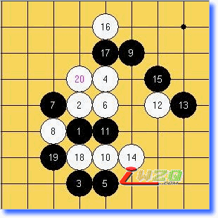
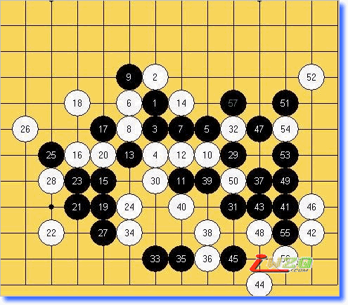
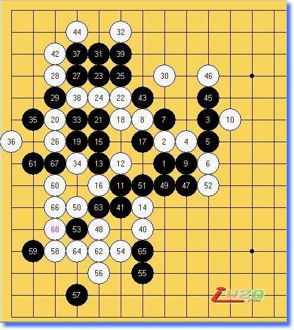
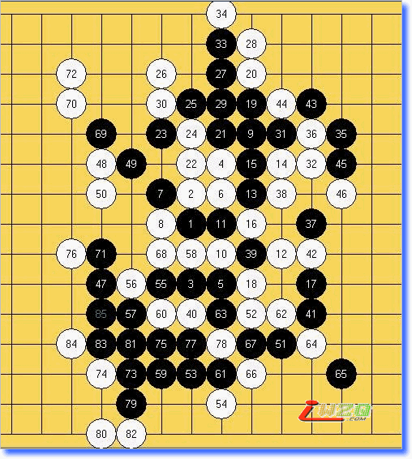
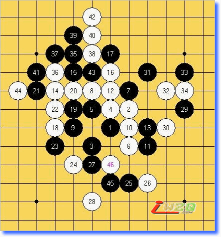
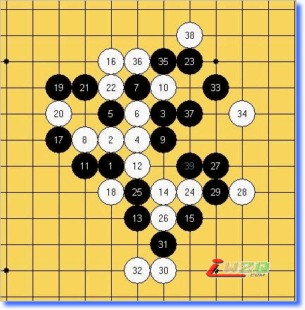
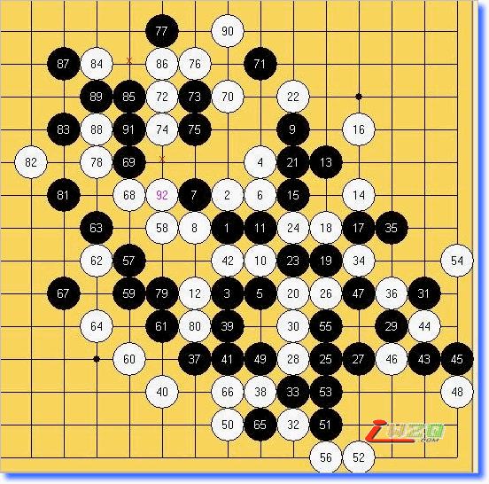

全锦赛对局简评
#1 全锦赛对局简评 作者：有志青年 发表时间：2007-10-16 22:16:07
全锦赛再次与冠军无缘.可能我的棋风确实不适合国内的比赛.这里简单的评评9轮对局

1
黑：贺启发
白：吴镝
16研究的变化，因为在网络里和三落的对局感觉他防守能力还是不错的。下这个是引诱他来进攻，以下黑明显走的不是最强。29的误算直接导致崩溃。

2
黑：黄立勤
白：吴镝
16纯粹自己在找死。此16在世锦赛上采用了三次。回来在中华连珠网还写了棋评。在这种情况下我继续下这个就只有用找死来形容了。黑完胜的一局。我再次坐实了冷门之王的称呼。

3
黑：朱凯
白：吴镝
12少见的变化。此变形黑无法直接简单胜。15败招。之后黑没什么特别好的交换了。17明显没看到白棋简单的进攻线路。轻取的一局

4
黑：吴镝
白：陈超
14本来是超不挂准备考验我的一个变化。但是非常可惜的是这路变化恰好是我为世锦赛准备的。所以。。。完全是撞枪口上了。整盘棋我用时不超过10分钟。可怜的不挂被秒杀了~

5
黑：谢磊
白：吴镝
一盘乏味的对局。黑进攻的并不犀利。最后白棋简单VCT掉。

6
黑：吴镝
白：梁大伟
很搞笑的一局。黑在进攻失败后追求交换时做的VCF对手竟然意外忽略掉咯。实战总是出现各种意外~

7
黑：吴镝
白：仇云飞
我和云飞可说互相非常了解了。从开局就可以看出他和棋的决心。实战我虽然下了很多欺骗性很强的手段。但都被一一化解，本局不出意料的和掉了。

8
黑：吴镝
白：朱建锋
虽然我们是好兄弟。但是面临都有夺冠希望的情况下谈不得半点情面。为了不出现和棋局面我直接走出必败的黑5.果然这变化不是人脑能算出必胜的。也许是长时间的计算导致了他头脑疲惫。32直接的败招，黑以下简单VCT。

9
黑：黄宇峰
白：吴镝
中了研究的一局，原来我心目中的平衡局面黑已经必胜了。还好对手中盘失误我才死里逃生。艰苦的后半段直到比赛还有几分钟结束才抓到漏洞，84必胜型。可惜虽然取胜依然和冠军无缘。让我郁闷的是某人没遇到我和朱建锋却得了冠军。看来我打国内比赛运气确实太烂了。
#2 Re:全锦赛对局简评 作者：行云流水 发表时间：2007-10-17 9:34:00
哈哈。谢谢了。